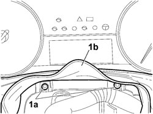
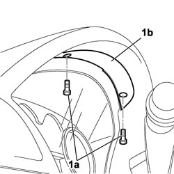
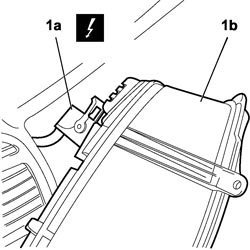

5560B10 CONTROL PANEL - R+R
- Path
- Procedures > 55 ELECTRICAL EQUIPMENT > 5560 INSTRUMENTS > 5560B ANALOGUE CONTROL PANEL > 5560B10 CONTROL PANEL - R+R
- Kind
- repair procedure (removal / refitting; the operation number is the code)
- Applies to
- all engines; all production periods
- Interactive page
- https://sloeber94.github.io/elrnDB-fCrm/en/#/194000777
Applies to: all engines; all production periods
 Removing
Removing
 Refitting
Refitting- Turn the ignition key to the OFF position.
- Open the bonnet.
- Disconnect the negative battery terminal.
Description | Connector | |
|---|---|---|
BATTERY |
Op. 7040A26 STEERING COLUMN TRIM - R+R
1. Unscrew and recover bolts (1a) from the control panel junction trim (1b), then remove the trim.

Applies to: all engines; all production periods
1. Unscrew bolts (1a) securing the retaining panel (1b) and partly prise up the control panel from the facia to gain access to the electrical connection.

Applies to: all engines; all production periods
1. Disconnect electrical connection (1a) and remove the control panel (1b) from the facia.
Description | Connector | |
|---|---|---|
1a | INSTRUMENT PANEL |

Applies to: all engines; all production periods
Applies to: all engines; all production periods
Refitting
Removing- Connect the electrical connection to the control panel.
Description | Connector | |
|---|---|---|
INSTRUMENT PANEL |
- Position the control panel in its seat with the retaining panel.
- Tighten the bolts fixing it to the retaining panel.
- P osition the control panel junction trim and tighten the bolts.
Op. 7040A26 STEERING COLUMN TRIM - R+R
- Connect the negative battery terminal.
Description | Connector | |
|---|---|---|
BATTERY |
- Check the operation of the instrument panel.
Topics linked from this page (3)
Topics that link to this page (79)
- G010 NO ACOUSTIC WARNING FOR HANDBRAKE APPLIED WITH VEHICLE MOVING
- K001 REV COUNTER NOT WORKING
- K003 SPEEDOMETER NOT WORKING
- K005 MILOMETER NOT WORKING
- K008 DISPLAY DOES NOT SHOW OUTSIDE TEMPERATURE
- K009 DOORS OPEN CHECK WARNING LIGHT/SYMBOL ON
- K011 DISPLAY SIGNALS ICE DANGER WITH HIGH OUTSIDE TEMPERATURE
- K012 DISPLAY DOES NOT SIGNAL ICE DANGER WITH LOW OUTSIDE TEMPERATURE
- K015 CLOCK NOT WORKING
- K020 FUEL LEVEL GAUGE NOT WORKING
- K021 FUEL RESERVE WARNING LIGHT NOT WORKING
- K025 ENGINE COOLANT TEMPERATURE GAUGE NOT WORKING
- K026 ENGINE COOLANT OVERHEATING WARNING LIGHT NOT WORKING
- K030 MINIMUM ENGINE OIL PRESSURE WARNING LIGHT NOT WORKING
- K033 DOORS OPEN CHECK WARNING LIGHT ON
- K034 LIGHTS CHECK WARNING LIGHT OFF (INITIAL TEST NOT CARRIED OUT)
- K038 MILOMETER/TRIP METER FLASHING
- K040 BATTERY CHARGING WARNING LIGHT NOT WORKING
- K043 DISPLAY DOES NOT SHOW AVERAGE CONSUMPTION ON TRIP MODULE
- K045 HEATER PLUGS WARNING LIGHT NOT WORKING
- K047 MINIMUM ENGINE OIL PRESSURE WARNING LIGHT ON CONSTANTLY
- K052 VEHICLE PROTECTION WARNING LIGHT ON (ENGINE DOES NOT START)
- K060 ABS FAILURE WARNING LIGHT ON
- K061 ABS WARNING LIGHT OFF (INTIAL TEST NOT CARRIED OUT)
- K062 ABS AND HANDBRAKE WARNING LIGHTS BOTH ON
- K066 HANDBRAKE WARNING LIGHT DOES NOT COME ON (WITH HANDBRAKE APPLIED)
- K068 ESP WARNING LIGHT ON
- K070 ELECTRIC STEERING WARNING LIGHT ON
- K071 ELECTRIC STEERING WARNING LIGHT OFF / (DOES NOT CARRY OUT INITIAL TEST)
- K072 HANDBRAKE APPLIED WARNING LIGHT
- K073 SEAT BELT UNFASTENED WARNING LIGHT ON
- K080 AIRBAG FAILURE WARNING LIGHT ON
- K081 AIRBAG WARNING LIGHT OFF (INITIAL TEST NOT CARRIED OUT)
- K082 PASSENGER AIR BAG DISABLED WARNING LIGHT ON
- K084 REAR SIDEBAG DISACTIVATION WARNING LIGHT NOT WORKING
- K090 INSTRUMENT LIGHTS NOT WORKING
- K091 INSTRUMENT LIGHTS DIMMER NOT WORKING
- K095 INSTRUMENT PANEL NOT WORKING
- K100 MIL WARNING LIGHT NOT WORKING (REMAINS OFF BEFORE STARTING)
- K101 MIL WARNING LIGHT STAYS ON (ENGINE STARTS)
- K102 DISPLAY MODULE NO SIGNAL - TO CHECK PANEL
- K104 DISPLAY DOES NOT SHOW HEADLAMP ALIGNMENT DATA
- K122 WATER IN DIESEL FILTER WARNING LIGHT OFF (INITIAL TEST NOT CARRIED OUT)
- K123 WATER IN DIESEL FILTER WARNING LIGHT ON CONSTANTLY
- K124 HEATER PLUGS WARNING LIGHT ON CONSTANTLY
- K125 DISPLAY DOES NOT SHOW RANGE ON TRIP MODULE
- K126 DISPLAY DOES NOT SHOW AVERAGE SPEED ON TRIP MODULE
- K127 DISPLAY DOES NOT SHOW JOURNEY TIME ON TRIP MODULE
- K136 VEHICLE PROTECTION SYSTEM WARNING LIGHT OFF (INITIAL TEST NOT CARRIED OUT)
- K137 VEHICLE PROTECTION SYSTEM WARNING LIGHT ON CONSTANTLY
- K140 FUEL RESERVE WARNING LIGHT ON (WITH HIGHER LEVEL)
- K141 MODE BUTTON NOT WORKING
- K142 RECHARGING WARNING LIGHT ON
- K143 ONE WARNING LIGHT ACTIVATED BY STEERING COLUMN SWITCH UNIT NOT WORKING
- K144 ONE WARNING LIGHT ACTIVATED BY STEERING COLUMN SWITCH UNIT ON CONSTANTLY
- K145 ONE WARNING LIGHT ACTIVATED BY CONTROL PANEL NOT WORKING
- K146 ONE WARNING LIGHT OPERATED BY CONTROL PANEL ON CONSTANTLY
- K157 SEAT BELT NOT FASTENED WARNING LIGHT NOT WORKING
- K158 GENERAL FAILURE WARNING LIGHT NOT WORKING
- K159 GENERAL FAILURE WARNING LIGHT ON CONSTANTLY
- N079 PARKING DEVICE NOT WORKING
- 3340AB SPEED SIGNAL CHECK
- 3340AB SPEED SIGNAL CHECK
- 5580HD BUZZER OPERATION CHECK
- 3330B02 PEDAL ASSEMBLY - R.R
- 3330B08 PEDAL MOUNT ASSEMBLY - R R AND OVERHAUL WITH FACIA TRIM SUPPORT BEAM REMOVED FOR RIGHT-HAND DRIVE VERSIONS
- 3330B22 BRAKE PEDAL - R+R FOR MANUAL GEARBOX VERSIONS
- 3330B26 CLUTCH PEDAL - R+R
- 3330B38 PEDAL UNIT MOUNT - R.R.
- 5040C10 AIR CONDITIONING CASING - R.R
- 5040C50 AIR CONDITIONING HEATER RADIATOR - R.R.
- 5040C64 A/C EVAPORATOR - R+R
- 5040D80 AIR CONDITIONER SYSTEM WIRING BUNDLE - R R OR REPLACE
- 5040D94 AIR CONDITIONING LEFT UPPER AIR DISTRIBUTION FLAP MOTOR (DEFROST) - R.R
- 5505C10 FRONT CROSSMEMBER WIRING - R.R
- 5505C31 BUILT-IN WIRING UNDER DASHBOARD - R.R.
- 7040A10 DASHBOARD TRIM - R+R
- 7040A97 INSTRUMENT PANEL TRIM SUPPORTING CROSSMEMBER - R.R
- 7095E22 SOUND-PROOF PANEL UNDER DASHBOARD SUPPORTING CROSSMEMBER - R.R.